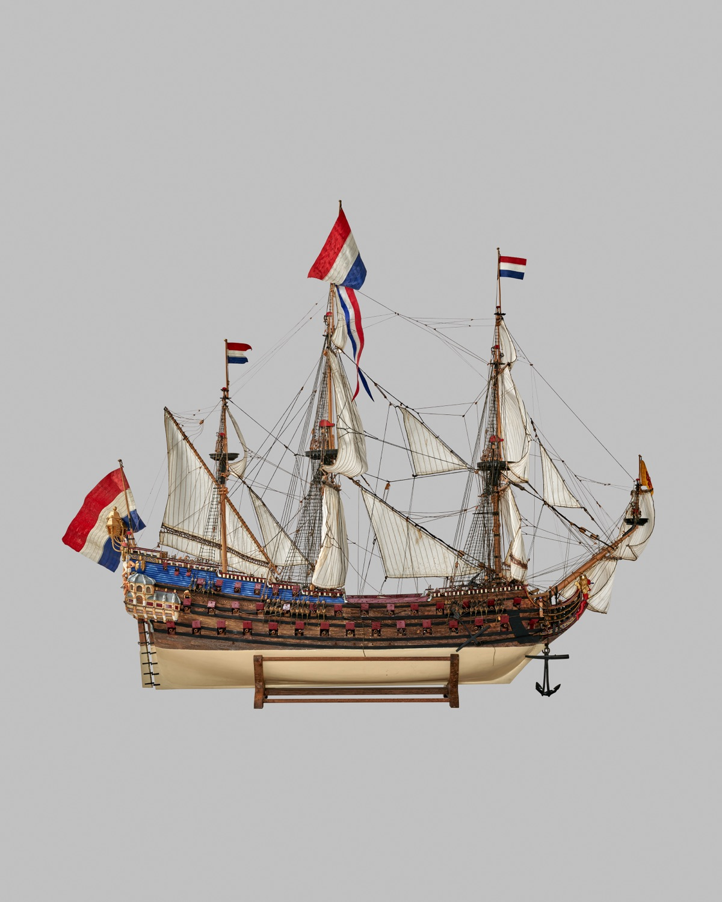
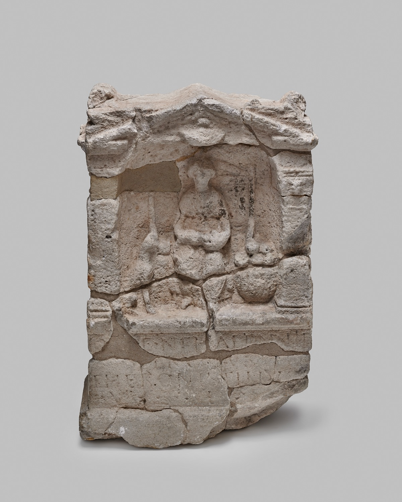
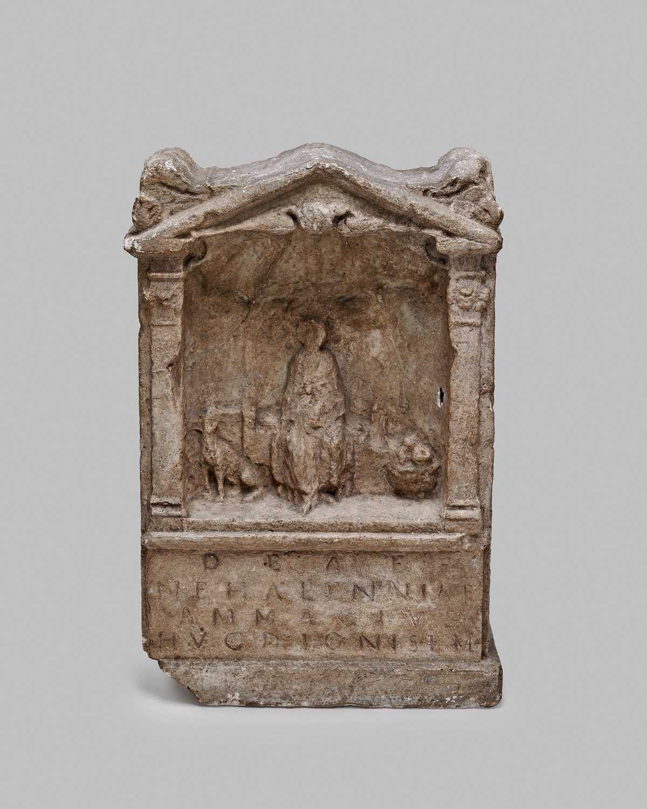

Collectiefotografie
Pim fotografeert elk object apart en bepaalt per stuk het licht, de achtergrond en de scherpte. Vooraf maken we een plan dat past bij wat jullie museum wil.
Wij brengen museumcollecties online: de fotografie, de collectie en de website eromheen.

Scherp tot in het kleinste detail
Pim fotografeert elk object apart en bepaalt per stuk het licht, de achtergrond en de scherpte. Vooraf maken we een plan dat past bij wat jullie museum wil.
We brengen de collectie online met de data en metadata op orde, en bouwen de website waarop je kunt zoeken, inzoomen en beeld vrij mag gebruiken.
Beeld dat ook in druk standhoudt, voor boeken, catalogi en tentoonstellingen.
Vijftig voorwerpen uit de collectie, van schoen tot scheepsmodel, gefotografeerd voor het boek Ga mee naar zee. De details vullen daarin hele pagina’s.



De digitale vernieuwing van het museum: een nieuwe huisstijl en de content die daarbij hoort. Dit loopt nu.
De altaarstenen van de godin Nehalennia, steen voor steen gefotografeerd. De losse fragmenten zijn daarna teruggelegd op de prenten waarop de stenen ooit heel zijn getekend.




Dit maakten we tot nu toe elk voor zich. Vanaf nu samen.
Digitale content en de vernieuwing van de collectie online
Lars2023–2025De digitale opening van een nieuw museum
Lars2025–2026Fotografie van archeologische vondsten en de Nehalennia-stenen
Pim2021–2023Campagne voor de opening van het Depot
Lars2021–2023Fotografie van vondsten en collectiestukken
Pim2022–2023Digitale content en tentoonstellingsfotografie
Pim en Lars2025Een tentoonstelling van Sabine Marcelis vastgelegd
Pim2019Digitale vernieuwing, huisstijl en content
Lars2026–2027Wat een museum bewaart, hoort ook online te zien te zijn: vrij, scherp en makkelijk te vinden. Dat doen we goed, of we doen het niet.
TOP/MIN is de studio van Pim Top en Lars Minnes. Top is het beste, min is minder. Zo werken we ook: we halen weg wat tussen een collectie en haar publiek staat.
Pim fotografeert al meer dan vijftien jaar objecten, erfgoed en tentoonstellingen. Zijn beeld is zo scherp dat je er onderzoek op kunt doen. Zijn werk stond in ELLE Decoration, Wallpaper* en PIN-UP.
Lars is kunsthistoricus en digital marketeer. Bij het Rijksmuseum leidde hij de digitale content en werkte hij mee aan de vernieuwing van Rijksstudio. Daarna bouwde hij de digitale opening van Fenix.
Vertel het ons. We komen graag kijken.